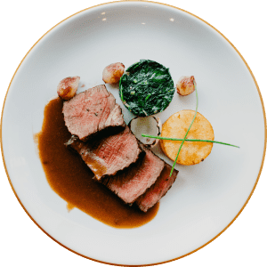

Crie uma experiência de deliciosa.
Experimente o sabor da DishFlavor! Não há nada como a sensação de comer uma refeição deliciosa feita com alimentos frescos e saudáveis. Com os produtos DishFlavor, você pode obter esse sabor incrível em sua própria casa. Venha experimentar o sabor da DishFlavor hoje!
Ingredientes frescos, saudáveis e com sabores deliciosos
Experimente o sabor da DishFlavor! Não há nada como a sensação de comer uma refeição deliciosa feita com alimentos frescos e saudáveis. Com os produtos DishFlavor, você pode obter esse sabor incrível em sua própria casa. Venha experimentar o sabor da DishFlavor hoje!
Pratos preparados
Pratos com vegetais
Sabores diferentes com o mesmo frescor
Vegetais com arroz
Picles, tomate, cenoura, brócolis, arroz, pimenta
Feijões com vegetais
Feijão, azeitona, tomate, picles
Arroz com vegetais e limão
Arroz, cenoura, abacate, tomate, limão

Pratos com carnes
Explore e desbloqueie um mundo de combinações
Peixe frito com vegetais
Peixe, gergelim, azeitona, arroz, cenoura, picles

Carne de cordeiro com feijões
Feijão, tomate, alface, carne de cordeiro, cebola
Carne de vaca com vegetais
Carne de vaca, batata, cogumelo, alface, alho
